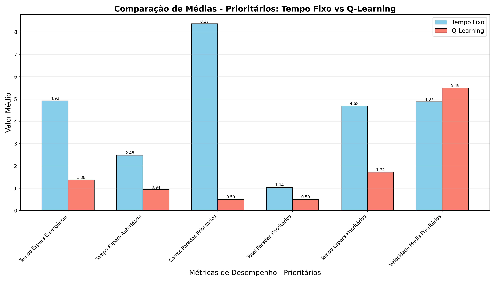

Relatório Comparativo de Veículos Prioritários: Tempo Fixo vs Q-Learning
Este relatório compara o desempenho dos algoritmos Tempo Fixo e Q-Learning especificamente para veículos prioritários (emergência e autoridade).
Métricas para Tempo de Espera - Emergência
| Algoritmo | Média | Desvio Padrão | Máximo | Mínimo |
|---|
| Tempo Fixo | 4.92 | 7.41 | 26.00 | 0.00 |
| Q-Learning | 1.38 | 3.69 | 10.50 | 0.00 |
Métricas para Tempo de Espera - Autoridade
| Algoritmo | Média | Desvio Padrão | Máximo | Mínimo |
|---|
| Tempo Fixo | 2.48 | 6.38 | 26.00 | 0.00 |
| Q-Learning | 0.94 | 2.65 | 7.50 | 0.00 |
Métricas Gerais para Veículos Prioritários
Carros Parados Prioritários
| Algoritmo | Média | Desvio Padrão | Máximo | Mínimo |
|---|
| Tempo Fixo | 8.37 | 9.89 | 24.00 | 0.00 |
| Q-Learning | 0.50 | 0.76 | 2.00 | 0.00 |
Total Paradas Prioritários
| Algoritmo | Média | Desvio Padrão | Máximo | Mínimo |
|---|
| Tempo Fixo | 1.04 | 1.25 | 7.00 | 0.00 |
| Q-Learning | 0.50 | 0.76 | 2.00 | 0.00 |
Tempo Espera Prioritários
| Algoritmo | Média | Desvio Padrão | Máximo | Mínimo |
|---|
| Tempo Fixo | 4.68 | 7.48 | 26.00 | 0.00 |
| Q-Learning | 1.72 | 3.70 | 10.50 | 0.00 |
Velocidade Média Prioritários
| Algoritmo | Média | Desvio Padrão | Máximo | Mínimo |
|---|
| Tempo Fixo | 4.87 | 5.28 | 13.82 | 0.00 |
| Q-Learning | 5.49 | 6.01 | 12.70 | 0.00 |
Comparação de Médias - Prioritários
